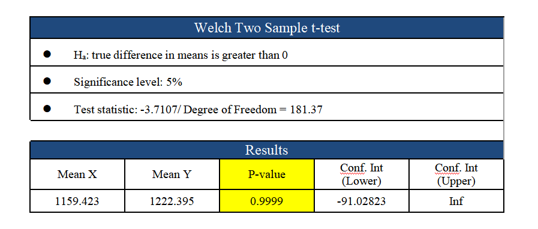
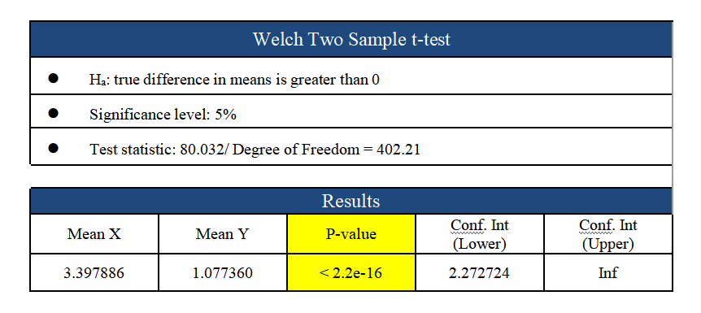
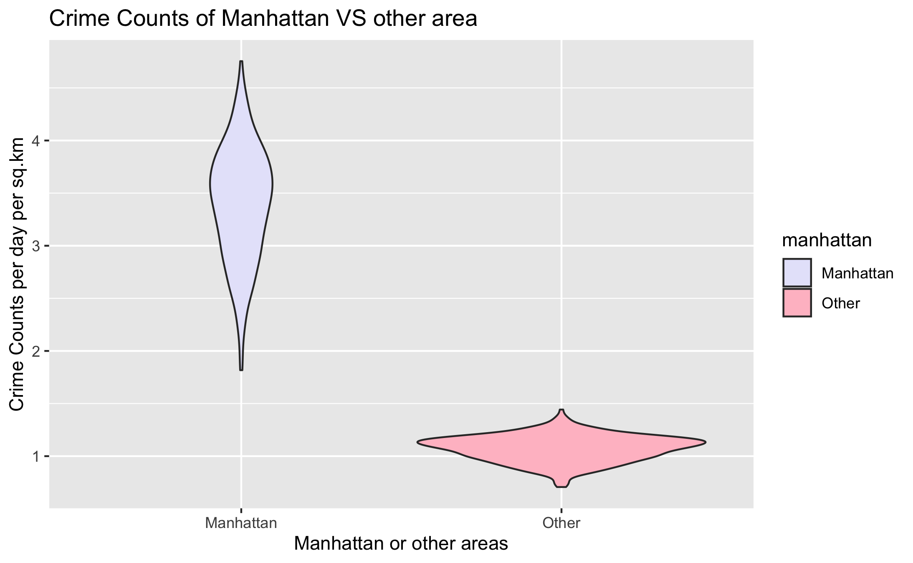

# Natural Language Processing # Deep Learning
#Name Entity Recognition (NER) #Sentence Transformer
As the most important financial center in the United States, New York City is famous for its prosperityand far-reaching influence. New York City is in reality a collection of many neighborhoods scatteredamong the city's five boroughs: Manhattan, Brooklyn, the Bronx, Queens, and Staten Island. According tothe most recent crime statistics released by the NYPD, the New York City police commissioner faces amurder rate that is 50 percent higher than it was before the pandemic and shootings that have doubledsince 2019. Therefore, it is time to increase awareness of public safety concerns.To address this critical issue, we propose building a data visualization that allows New York City citizensto form a basic recognition of New York City's crime condition. Our project will show the distribution offactors contributing to the high crime rate and allow people to protect themselves efficiently
As we know the crime rate in NYC is always high, people live in New York City worry about the risk around them. Is there a significant amount of crime happen in specific place? Can we avoid them? To give people a clearer picture of where crime often occurs, the interaction stacked bar plot was created by using plotly. This plot shows the number of crimes in top 10 premises in 2021. We filtered the number of crimes in different premises and chose top 10 places. The color represents the three types of crime: violation, misdemeanor, and felony. In this plot, misdemeanor is the most frequent type of crime. Violation always happened in residence-apartment house, which is warning everyone to pay attention to indoor safety.
Here we ask the question, is there any relationship between crime rate and weather, and does crime rate decrease when extreme weather occurs? This interactive scatterplot clearly shows us the 365 days of crime statistics and the impact of weather in 2021. We merged the two datasets New York weather data and crime data by date to get the final dataset with date, daily crime amount and daily weather conditions. When double-clicking any weather in the conditions, only this kind of weather data will be displayed on the map. We can see a significant drop in crime during the winter months of December-February, when it is snow-dominated. An upward trend in April-November when it is partially cloudy and rainy. When the weather is clear, crime rises until winter starts to drop in November.
As we can see from this plot, there are more black victims than other races, white Hispanic ranks second, and white ranks third. We should also notice that most New York City citizens are white, which indicates that the proportion of black victims in all black citizens is much higher. Among all the black victims, females are more than males, especially in misdemeanor crimes. However, among all the Asian and Pacific Island victims, males are almost always more than females. More reported crimes are classified as misdemeanors than violations or felonies. There is no big change in the victim profiles through the year 2021.
In order to view the number of crimes occurred everyday, we made this calendar map by r2d3 (legend is still missing, but we are going to fix it soon). This interactive plot shows the number of crimes everyday in 2021, where lighter colors represent larger amounts. As we can see, crimes occurred most on Jan. 1st, possibly because it is New Years Day. Going home early on the first day of the year might be a wise choice to avoid danger. Unfortunately, the number of crimes is increasing through time in general.
A plotly treemap can show the similar information as the calendar map by using colors and sizes of areas as numbers of crimes. In this plot, we applied year - month - day as the path. It looks almost like a calendar except that the days and the months are descending sorted. October has the most crimes and Oct. 15th has the most crimes in October. By clicking each subtree, we can zoom in and see more detailed information. This interactive treemap can be useful to many users such as the reinforcement department.
A plotly treemap can show the similar information as the calendar map by using colors and sizes of areas as numbers of crimes. In this plot, we applied year - month - day as the path. It looks almost like a calendar except that the days and the months are descending sorted. October has the most crimes and Oct. 15th has the most crimes in October. By clicking each subtree, we can zoom in and see more detailed information. This interactive treemap can be useful to many users such as the reinforcement department.
The result shows that since p-value is greater than 0.05, At 5% significance level, we fail to reject the null hypothesis. So, we can conclude that crime counts per day of weekends is not greater than weekdays in New York. Different from what we expected, the crime count during weekends is less than weekday by 91.03 at 95% confidence interval.
Another visual way to see the difference is to compare the box plot. As shown in below, the average is about the same but the 25% quantile of crimes at the weekend is much smaller than the number on weekdays.
The result shows that since p-value is less than 0.05, At 5% significance level, we have enough evidence to reject the null hypothesis. So, we can conclude that crime counts per sq.km tends be greater than other places in New York. From the 95% confidence interval, we have 95% confidence that the mean crime counts per sq.km is greater than other places by 2.27.
Similar to a box plot, a violin plot tells us the distribution of quantitative data across several levels of one (or more) categorical variables. In this case, it's quite obvius that there are a lot more crimes happening in Manhattan than in other areas.
Our project aims to provide people with the possibility of the occurrence of crime according to thegeospatial and time-related variables. The users are also able to take crime heat maps as a referral, whichenables them to have a clear view of crime probability. Suppose that Vicky is a college student from Columbia University and she often has courses in the evenings. Therefore, she wants to learn what kindof crime commonly takes place in the evening and whether it is safe near her campus and neighbor. Marycould take our project as a reference and take several variables to determine her safety status. When shedoes so, Vicky may notice that location and time appear to be strong predictors that indicate theoccurrence of crime. In fact, if it is late night and the location is near Brooklyn, then the best choice forVicky is to take an uber home instead of the subway.